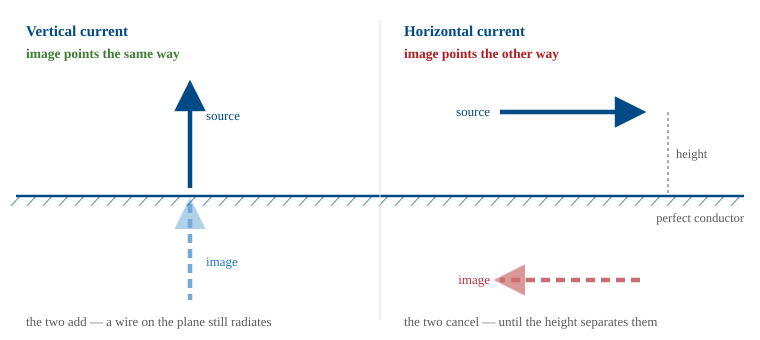
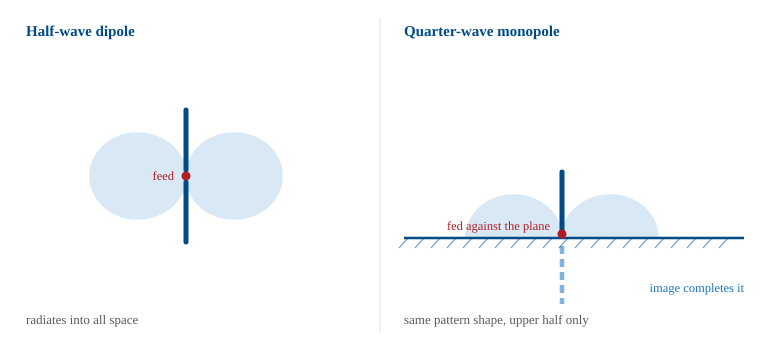
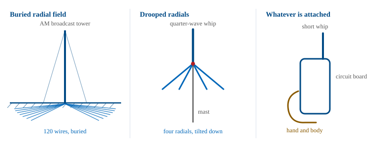
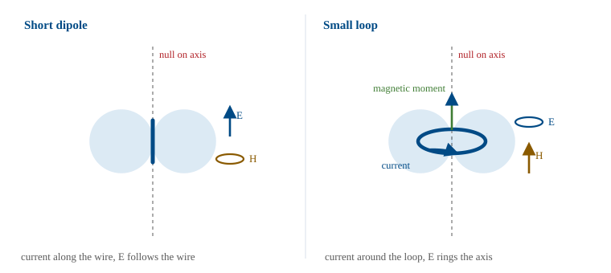

L9 - Loop and Monopole Antennas#
Loop and Monopole Antennas
A mirror turns a dipole into a monopole, and a ring of current turns it into its magnetic twin.
Lesson 9 · Antennas, Phased Arrays, and Radar Systems · Dr. Neil Rogers
Learning Objectives
- I can apply image theory to build a quarter-wave monopole out of a half-wave dipole, and state its impedance, its directivity, and why it only radiates into a hemisphere.
- I can explain what an imperfect ground does to a monopole, and why radial systems and counterpoises exist.
- I can describe the electrically small loop as a magnetic dipole — its pattern, its very small radiation resistance, and why small loops are receiving and sensing antennas rather than efficient transmitters.
- I can distinguish the electrically small loop from the resonant loop, and connect the limits on small antennas back to the bandwidth-size trade.
Where we were
Lesson 7 gave you two reference antennas — the isotropic radiator you measure gain against, and the half-wave dipole at \(73 + j42.5\ \Omega\) and 2.15 dBi — and Lesson 8 put a dipole into a simulator so you could watch those numbers appear. Today you get the other two wire antennas that show up everywhere in the field: the monopole standing on a ground plane, which is half a dipole and behaves exactly like it, and the small loop, which is the dipole’s magnetic twin and behaves nothing like it. One of them is on every vehicle, tower, and handheld radio you will ever touch. The other is how you find a hidden transmitter.
A boundary condition you do not want to solve
Put an antenna above a large, perfectly conducting plane and you have a boundary-value problem: the tangential electric field must vanish everywhere on the conductor. Solving that directly is unpleasant. Image theory says you do not have to. Delete the conductor, add a mirror-image source below where the plane used to be, and choose the image’s sign so that the tangential field cancels on the old boundary. The two sources together satisfy the same boundary condition, so above the plane they produce the identical field. Below the plane the pair produces a field that describes nothing physical, and there is no field there in any case because the conductor shorts it out.
The sign rule
The sign rule is the whole lesson in two lines:
A vertical current (normal to the plane) images in phase — the image points the same way.
A horizontal current (tangential to the plane) images out of phase — the image points the other way.
Vertical images in phase, horizontal reversed

Height doesn’t save a horizontal wire
The consequence matters more than the derivation. A vertical wire and its image add, no matter how close to the plane you push it — so a vertical antenna works even when it is sitting right on the ground. A horizontal wire and its image subtract, and as the height goes to zero they cancel exactly — so a horizontal wire laid on the ground radiates essentially nothing. That is why broadcast towers are vertical and why your field-expedient dipole has to get up in the air.
Element plus image, a two-element array
Once you have the image, the problem is one you already solved in Lesson 6: two sources, so the pattern is the element factor times a two-element array factor. With the element at height \(h\) and its image at \(-h\), the phase difference between the two paths is \(2kh\cos\theta\), so
Perfect ground puts a null on the horizon
with \(\theta\) measured from the vertical and only \(0 \le \theta \le 90^\circ\) meaning anything. At the horizon, \(\cos\theta = 0\): the vertical case gives 2 (always reinforcing) and the horizontal case gives 0 (always a null straight along the ground). Perfect ground always puts a null on the horizon for horizontal polarization. No amount of height fixes that; height only decides where the first lobe lands.
What image theory assumes
Note
Image theory needs the plane to be a perfect conductor and, strictly, infinite. Neither is ever true. Part 3 is about what you pay for that.
Cut a dipole in half
Now do the trick backwards. Take a half-wave dipole, cut it in half, throw away the bottom half, and stand the top half on a ground plane driven against the plane at its base. The image restores the missing half. Above the plane, the fields are the fields of the full half-wave dipole — identical pattern shape, identical current distribution on the remaining metal.
The image restores the missing half

Impedance halves
Two things changed, and both follow from bookkeeping rather than new physics.
The feed current is the same as the dipole’s, but you are only driving half the structure, so it takes half the voltage. Half the voltage at the same current is half the impedance:
Directivity doubles
The same total pattern is squeezed into half the solid angle, because no power goes below the plane. Same peak intensity, half the radiated power, so
The 3 dB is free
That 3 dB is free in exactly the sense that a mirror gives you free light: nothing was created, the power that used to go down now goes sideways.
Dipole vs monopole
Quantity |
Half-wave dipole |
Quarter-wave monopole |
|---|---|---|
Physical length |
\(0.5\lambda\) |
\(0.25\lambda\) |
\(Z_{\text{in}}\) (thin wire) |
\(73 + j42.5\ \Omega\) |
\(36.5 + j21.3\ \Omega\) |
Resonant (trimmed) length |
\(\approx 0.47\lambda\) at \(\approx 70\ \Omega\) |
\(\approx 0.24\lambda\) at \(\approx 36\ \Omega\) |
Dipole vs monopole, continued
Quantity |
Half-wave dipole |
Quarter-wave monopole |
|---|---|---|
Directivity |
1.64 (2.15 dBi) |
3.28 (5.15 dBi) |
Elevation HPBW |
\(78^\circ\) |
\(39^\circ\) (upper half of the same beam) |
Coverage |
all space |
upper hemisphere |
Worked example — a 146 MHz whip
Worked example — a 146 MHz whip
Design a quarter-wave monopole for the middle of the 2 m band and see how well it matches \(50\ \Omega\).
Length. \(\lambda = c/f = (3\times10^8)/(146\times10^6) = 2.05\ \text{m}\), so \(\lambda/4 = 0.514\ \text{m}\) — a 51 cm whip.
Worked example — a 146 MHz whip, continued
Worked example — a 146 MHz whip
Match as-built. With \(Z_{\text{in}} = 36.5 + j21.3\ \Omega\) against \(50\ \Omega\),
Worked example — a 146 MHz whip, continued
Worked example — a 146 MHz whip
Match after trimming. Shorten the whip by about 4% to \(0.24\lambda = 49\ \text{cm}\) to cancel the reactance. Now \(Z_{\text{in}} \approx 36\ \Omega\) real, and VSWR \(= 50/36 = 1.39\).
Match after tilting the radials. Droop four quarter-wave radials down about \(45^\circ\) and the base impedance climbs to roughly \(50\ \Omega\): VSWR near 1.0, no matching network, no extra parts. This is why commercial ground-plane antennas have sagging radials.
Key point
A quarter-wave monopole over a good ground plane is a half-wave dipole with half the impedance (\(36.5 + j21.3\ \Omega\)), twice the directivity (5.15 dBi), and one hemisphere of coverage. Nothing about it is new physics — it is a dipole plus a mirror.
Height above ground
Drag the height slider below to compare the two rules. Start with the vertical element at the bottom of its range: the pattern is the monopole’s, the directivity readout parks at 3.28, and the peak sits on the horizon. Then switch to the horizontal wire at the same height and look at the third pill — the directivity is higher, but the radiated power has collapsed by more than 10 dB, because the image is canceling the source. Raise the horizontal wire and watch that power come back as the first lobe forms overhead.
Directivity and gain part company
Note
Directivity and gain part company here. Directivity only describes the shape of what gets out. A horizontal wire at \(0.05\lambda\) has a 9 dBi pattern shape pointed straight up and radiates almost nothing, because cancellation shows up in the radiation resistance, not in the pattern. Always check both numbers.
Real ground is not a mirror
Real ground is a lossy dielectric, not a mirror. Three things go wrong, in order of how much they will cost you.
Loss resistance
Return current spreads out through the soil under the antenna and dissipates there. That loss appears in series with the feed as a ground resistance \(R_g\), and the radiation efficiency becomes
A monopole only has \(36.5\ \Omega\) of radiation resistance to work with, so a few ohms of ground loss is a few tenths of a dB, and a badly grounded short whip — with an \(R_r\) of a couple of ohms — can throw away most of its power. This is why AM broadcast stations bury a radial system: the FCC standard is 120 buried wires, each a quarter wavelength long, fanning out from the tower base. The radials do not radiate. They intercept the return current in copper instead of dirt.
Pattern damage at low angles
A real earth cannot support the grazing field a perfect conductor can, so the reflection coefficient falls away near the horizon. The horizon-grazing lobe of a vertical antenna is lost, and the peak of the pattern lifts a few degrees off the ground. The 5.15 dBi you calculated is an upper bound that assumes a perfect plane, and the elevation angle at which the energy leaves is set by the ground, not by the antenna.
Finite ground planes
Nothing in the field is infinite. A quarter-wave whip on a car roof at 800 MHz sees a plane many wavelengths across and behaves like the textbook — but the same whip on the same roof at 30 MHz sees a plane a hundredth of a wavelength across and behaves like a capacitor. When you cannot get a plane, you fake one with a counterpoise: four drooping radials on a mast, a metal disc under a GPS patch, the ground pour on a circuit board. On a handheld radio the counterpoise is the case, the board, and your hand. Gripping a handheld differently changes both its impedance and its pattern, which is why handheld radios are tested against a phantom hand.
Three ways to fake a ground

Model the ground explicitly
Note
If you go back to the simulator from Lesson 8 to model a monopole, remember that the model needs an explicit ground: a perfect-conductor plane for the textbook answer, or a real-earth model with a conductivity and a permittivity for the realistic one. Feed the base segment against that plane. A monopole modeled in free space with no ground is a very short dipole, and the simulator will return a number that does not describe the antenna you meant to build.
The small loop is a magnetic dipole
Now change the current’s shape instead of its neighborhood. Take a loop of wire whose circumference is much less than a wavelength — \(C < 0.1\lambda\) is the usual line — and drive it. The current is essentially uniform all the way around, in phase, because there is not enough electrical length for it to vary.
The dual of the short dipole
Feed that uniform ring current into the radiation integral from Lesson 6 and everything comes out as the exact dual of the short dipole. A short dipole is an oscillating electric dipole moment; a small loop is an oscillating magnetic dipole moment \(m = I A\), with \(A\) the loop area and the moment pointing along the loop axis by the right-hand rule. The fields simply trade places:
Short dipole vs. small loop
Short electric dipole (along \(z\)) |
Small loop (in the \(xy\) plane) |
|
|---|---|---|
Source |
current \(I\) along a length \(\ell\) |
current \(I\) around an area \(A\) |
Far field |
\(E_\theta\), \(H_\phi\) |
\(E_\phi\), \(H_\theta\) |
Power pattern |
\(\vert F\vert = \sin\theta\) |
\(\vert F\vert = \sin\theta\) |
Short dipole vs. small loop, continued
Short electric dipole (along \(z\)) |
Small loop (in the \(xy\) plane) |
|
|---|---|---|
Directivity |
1.5 (1.76 dBi) |
1.5 (1.76 dBi) |
Null |
along the wire |
along the loop axis |
Radiation resistance |
\(80\pi^2 (\ell/\lambda)^2\) |
\(20\pi^2 (C/\lambda)^4\) |
Same donut, fields swapped

Maximum in the plane, null through the hole
The loop has the same doughnut pattern as the short dipole with the polarization rotated by 90 degrees. Its maximum radiation lies in the plane of the loop and its null lies along the axis, through the hole, which is the opposite of what most people expect. That null is the basis of direction finding: you rotate the loop until the signal disappears, and the bearing is precise because a null is sharp while a pattern maximum is broad.
The fourth-power penalty on circumference
The exponent is what matters here. The result can be written two ways,
and both forms punish small size severely. Halve the loop and the radiation resistance drops by a factor of 16.
Worked example — a 30 MHz loop
Worked example — the full loss budget of a 30 MHz loop
A single-turn copper loop, \(C = 0.1\lambda\) at \(f = 30\ \text{MHz}\) (\(\lambda = 10\ \text{m}\)), made of 4 mm diameter wire (\(b = 2\ \text{mm}\)). Loop radius \(a = C/2\pi = 0.159\ \text{m}\).
Radiation resistance. \(R_r = 20\pi^2 (0.1)^4 = 0.0197\ \Omega\) — 20 milliohms, about the resistance of a short piece of the wire itself.
Worked example — a 30 MHz loop, continued
Worked example — the full loss budget of a 30 MHz loop
Loss resistance. Copper surface resistance at 30 MHz is \(R_s = \sqrt{\pi f \mu_0/\sigma} = 1.43\ \text{m}\Omega\) per square, and the loop is \(C/2\pi b = 79.6\) squares around:
Worked example — a 30 MHz loop, continued
Worked example — the full loss budget of a 30 MHz loop
Efficiency. \(\eta_{\text{rad}} = 0.0197/(0.0197 + 0.114) = 0.148\), i.e. 14.8%, a loss of 8.3 dB. Gain \(= 1.76 - 8.3 = -6.5\ \text{dBi}\).
What that means at the feed. To deliver 100 W you need \(I = \sqrt{2P/R_{\text{total}}} = 38.7\ \text{A}\) peak in that loop, of which 15 W radiates and 85 W heats the wire. This is why transmitting magnetic loops are built from thick copper tubing with welded joints and a vacuum capacitor.
Why receive loops are everywhere anyway
Receiving is a different economy entirely, because on receive you are not fighting efficiency, you are fighting the receiver’s noise — and at HF and below, external atmospheric noise is so large that a lossy antenna still delivers a signal-to-noise ratio limited by the sky, not by the antenna. A loop that is a poor transmitter can therefore be a good receiving antenna. Wind \(N\) turns and the radiation resistance goes as \(N^2\) while the loss only goes as \(N\); wrap those turns on a ferrite rod and the effective permeability multiplies the moment again. The bar behind the dial of an AM radio is a many-turn ferrite loop. Its efficiency is very low, and at broadcast frequencies that costs nothing that matters.
Grow it to one wavelength
Grow the loop until its circumference is about one wavelength and the story changes completely. The current is no longer uniform — it reverses around the loop — and the pattern flips: maximum radiation is now along the axis, broadside to the plane of the loop, where the small loop had its null. The feed impedance rises to roughly \(100\) to \(130\ \Omega\), and the directivity is about 3.1 dBi, a little under 1 dB better than a dipole. This is the loop you can transmit with efficiently, and it is the element in a quad antenna.
Small loop vs. resonant loop
Electrically small loop |
Resonant loop |
|
|---|---|---|
Circumference |
\(C \ll \lambda\) (rule: \(< 0.1\lambda\)) |
\(C \approx 1\lambda\) |
Current |
uniform, in phase |
reverses around the loop |
Maximum |
in the plane of the loop |
along the axis |
Small loop vs. resonant loop, continued
Electrically small loop |
Resonant loop |
|
|---|---|---|
\(R_{\text{in}}\) |
milliohms |
\(100\text{-}130\ \Omega\) |
Typical use |
receiving, direction finding, sensing |
transmitting element (quad) |
Small is expensive twice
The gap between those two columns is the same trade you met in Lesson 3. An antenna that fits inside a sphere of radius \(a\) stores far more energy in its near field than it radiates each cycle, and the Chu limit puts a floor on the resulting quality factor, \(Q \gtrsim 1/(ka)^3\) for a small antenna — so the fractional bandwidth, roughly \(1/Q\), collapses as the cube of the size. The 30 MHz loop above has \(ka = 0.1\), so \(Q \approx 10^3\) and its matched bandwidth is on the order of 0.1%: about 30 kHz at 30 MHz, which is why magnetic loops are retuned every time you move across a band.
Key point
Small is expensive, and it is expensive twice. Shrinking an antenna drives the radiation resistance toward zero — as \((C/\lambda)^4\) for a loop — which wrecks efficiency, and it drives the stored-to-radiated energy ratio up, which wrecks bandwidth. Loss resistance is the only thing that broadens a small antenna, and it broadens it by throwing your power away.
Summary — the monopole
Symbol / idea |
What it says |
Number to remember |
|---|---|---|
Image theory |
vertical currents image in phase, horizontal currents image reversed |
horizontal wire on the ground radiates nothing |
\(Z_{\text{in}}^{\text{mono}} = \tfrac{1}{2}Z_{\text{in}}^{\text{dipole}}\) |
half the structure, half the voltage, same current |
\(36.5 + j21.3\ \Omega\) |
\(D_{\text{mono}} = 2D_{\text{dipole}}\) |
same beam into half the solid angle |
3.28, or 5.15 dBi |
Summary — ground and the small loop
Symbol / idea |
What it says |
Number to remember |
|---|---|---|
Radial system / counterpoise |
gives the return current a low-loss path |
120 buried radials (AM); 4 drooped radials \(\approx 50\ \Omega\) |
\(\eta_{\text{rad}} = R_r/(R_r + R_g + R_{\text{ohmic}})\) |
ground and copper loss compete with radiation |
a few ohms matters when \(R_r\) is small |
Small loop |
magnetic dipole: \(\vert F\vert = \sin\theta\), \(E\) in \(\hat{\phi}\), null on the axis |
\(D = 1.5\) (1.76 dBi) |
Summary — the loop and the Chu limit
Symbol / idea |
What it says |
Number to remember |
|---|---|---|
\(R_r = 20\pi^2 (C/\lambda)^4\) |
fourth power in circumference |
\(0.02\ \Omega\) at \(C = 0.1\lambda\) |
Resonant loop, \(C \approx 1\lambda\) |
current reverses, maximum swings onto the axis |
\(100\text{-}130\ \Omega\), \(\approx 3.1\) dBi |
Chu limit, \(Q \gtrsim 1/(ka)^3\) |
small antennas store far more than they radiate |
\(ka = 0.1 \rightarrow\) about 0.1% bandwidth |
Practice
Where this is going
You now have the complete wire-antenna toolkit: dipole, monopole, loop, and the image trick that turns any of them into something mounted on a vehicle. Lesson 10 leaves wires behind for the printed and aperture antennas — the microstrip patch, the slot, and the horn — where the radiating object is a surface or an opening rather than a current filament. The patch behaves much like two slots over a ground plane, and you will use image theory again to understand why it works at all.
The other thread from today runs into Module 3. A monopole is an element plus one image; an array is an element plus many neighbors, and the same element-factor-times-array-factor bookkeeping handles both. When you get to pattern multiplication in Lesson 16, notice that you have already done it once — the height-above-ground curve you played with today is a two-element array whose second element happens to be a reflection.